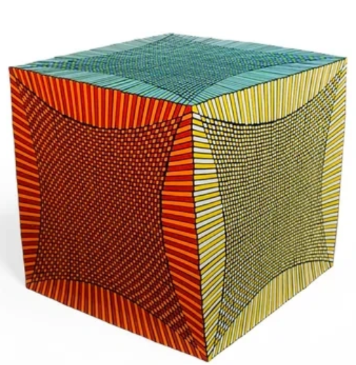
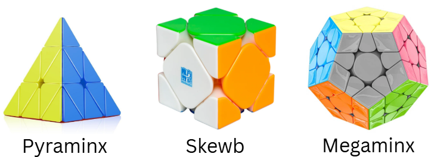
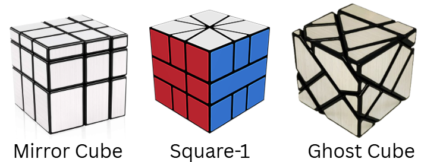

04 – BEYOND THE 3X3
Think the 3×3 is the end of the rabbit hole?
Not even close.
There are bigger cubes, stranger shapes, and puzzles that don't even look like cubes.
BIGGER CUBES
You can go from 2×2 → 3×3 → 4×4 → 5×5 → 6×6 → 7×7.....to?
49x49!

Yes, that's the maximum layered, fully functional rubik's cube made (as of 2026).
However, the largest mass-produced rubik's cube available for retail purchase is the 21x21.
SAME IDEA, DIFFERENT SHAPE‼️
More layers. More pieces. More opportunities to question your life choices.


And this is still just scratching the surface.